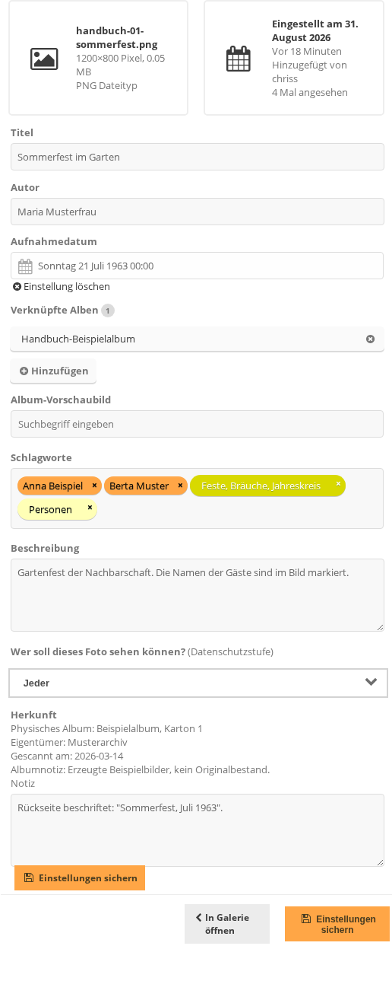
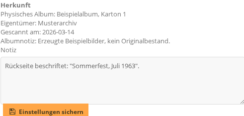
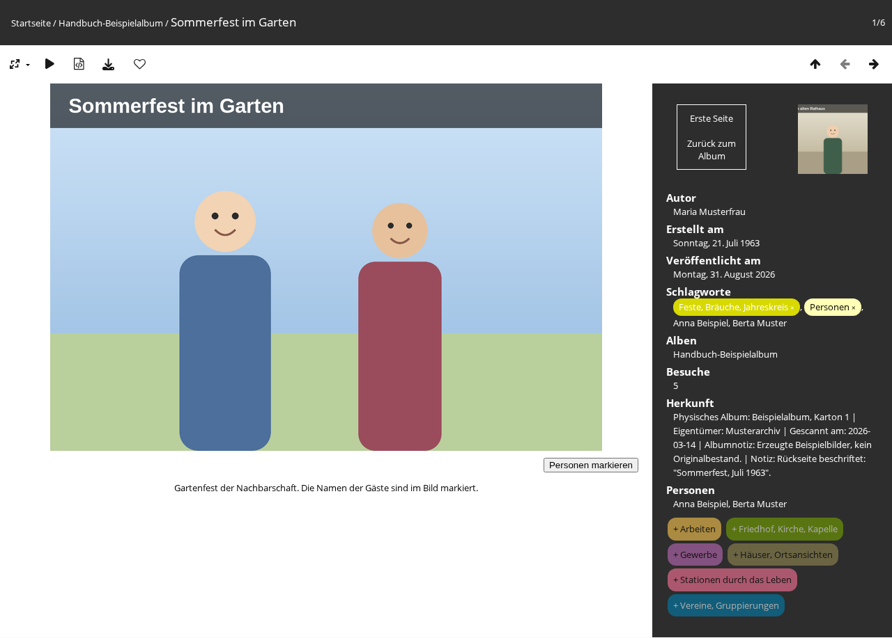

Die Texte eines Fotos stehen in seinen Eigenschaften
(admin.php?page=photo-<nummer>-properties). Dorthin führt die
Stapelverarbeitung oder ein Klick auf ein Foto in der Verwaltung. Die Seite ist der
Verwaltung vorbehalten.

Die Eigenschaften eines Fotos, hier mit allen Feldern ausgefüllt.
Titel, Autor, Aufnahmedatum und Beschreibung
Titel: die Überschrift des Fotos. Beim Hochladen trägt Piwigo den
Dateinamen ohne Endung ein und ersetzt Unterstriche durch Leerzeichen, aus
zz_test_a.jpg wird also zz test a. Wird das Feld von Hand geleert,
zeigt Piwigo wieder den Dateinamen an.
Autor: wer das Foto aufgenommen hat.
Aufnahmedatum: wann das Foto entstanden ist, nicht wann es hochgeladen
wurde. Ein Klick auf das Feld öffnet einen Kalender.
Einstellung löschen darunter leert das Datum wieder.
Beschreibung: freier Text zum Foto.
Auf dem Bildschirm liegen zwischen Aufnahmedatum und
Beschreibung noch drei weitere Felder, siehe unten,
Die weiteren Felder derselben Seite.
Alle Änderungen werden erst mit Einstellungen sichern übernommen.
Der Dateiname steht oben links im grauen Kasten und lässt sich nicht
ändern. Dort stehen auch Abmessungen, Dateigröße und Dateityp sowie rechts daneben, wann
das Foto eingestellt wurde, von wem und wie oft es angesehen wurde.
Die weiteren Felder derselben Seite
Verknüpfte Alben: die Alben, in denen das Foto liegt. Das
x entfernt eines, Hinzufügen ergänzt eines.
Album-Vorschaubild: macht dieses Foto zum Titelbild der hier gewählten
Alben.
Wer soll dieses Foto sehen können? (Datenschutzstufe): schränkt ein, wer
das Foto zu sehen bekommt. Jeder ist die offene Einstellung. Die anderen
vier Stufen nennen jeweils alle Gruppen, die das Foto noch sehen:
Administratoren, Administratoren, Familie,
Administratoren, Familie, Freunde und
Administratoren, Familie, Freunde, Kontakte. Je länger die Aufzählung,
desto mehr Personen sehen das Foto.
Beim Sichern gilt für Verknüpfte Alben genau die Liste, die im Feld steht.
Ein Album, das hier fehlt, verliert das Foto. Das Feld ergänzt also nicht, es ersetzt.
Wer ein Foto einem weiteren Album hinzufügen will, ohne die bisherigen zu verlieren,
benutzt in der Stapelverarbeitung die Aktion Mit einem Album verbinden
(siehe Fotos zu einem Album hinzufügen). Das Album, in dem die
Datei physisch liegt, kann nicht entfernt werden.
Herkunft und Notiz
Unter den Kernfeldern steht der Abschnitt Herkunft. Er beschreibt, woher die
Vorlage stammt.

Der Abschnitt Herkunft. Nur die Notiz ist hier veränderbar.
Physisches Album, Eigentümer,
Gescannt am und Albumnotiz stehen als Text da und lassen
sich auf dieser Seite nicht bearbeiten. Sie gelten für das ganze Album und werden dort
gepflegt, in den Eigenschaften des Albums.
Notiz ist das einzige Feld dieses Abschnitts, das zu diesem einen Foto
gehört. Hier steht, was nur für dieses Bild gilt, etwa eine Beschriftung auf der Rückseite
oder ein Schaden am Abzug.
Der Abschnitt hat eine eigene Schaltfläche Einstellungen sichern direkt
darunter. Sie sichert die Notiz. Die Meldung lautet danach
Herkunft gespeichert.
Wo die Texte öffentlich erscheinen

Die Fotoseite. Links das Foto mit Titel und Beschreibung, rechts die Angaben.
Titel: als Überschrift über dem Foto und im Titel des Browserfensters.
Beschreibung: als Text direkt unter dem Foto.
Autor: rechts in den Angaben unter Autor.
Aufnahmedatum: rechts unter Erstellt am. Daneben steht
unter Veröffentlicht am das Datum des Uploads.
Herkunft: rechts als eigene Zeile. Die fünf Angaben stehen dort
hintereinander, durch senkrechte Striche getrennt.